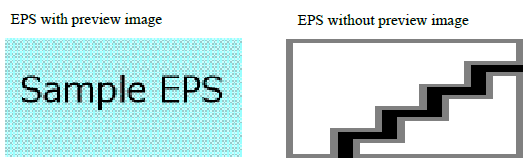

EPS with preview image

EPS with preview image


EPS with and without a preview image when EPS-processor is not set in the Option Setting File.
Also, EPS code can be included directly in HTML/CSS. With Adobe Distiller or a similar application, the EPS code can be embedded in PDF as-is. The following EPS was given by including the EPS code shown in the right column in HTML.
EPS code
<![CDATA[%!PS-Adobe-3.0 EPSF-3.0
%%BoundingBox: 0 0 84 43
%%Pages: 0
%%Creator: Antenna House
%%Title: Green Rounded Box
%%CreationDate: 10 Feb 2003
%%LanguageLevel: 2
%%EndComments
%%BeginProlog
%%EndProlog
%%BeginSetup
%%EndSetup
%%Page: 1 1
%%BeginPageSetup
%%EndPageSetup
0 128 0 setrgbcolor
0.1 setlinewidth
newpath
0 5 moveto
0 43 84 43 5 arct
84 43 84 0 5 arct
84 0 0 0 5 arct
0 0 0 43 5 arct
closepath
gsave
stroke
grestore
fill
%%PageTrailer
%%Trailer
%%EOF
]]>